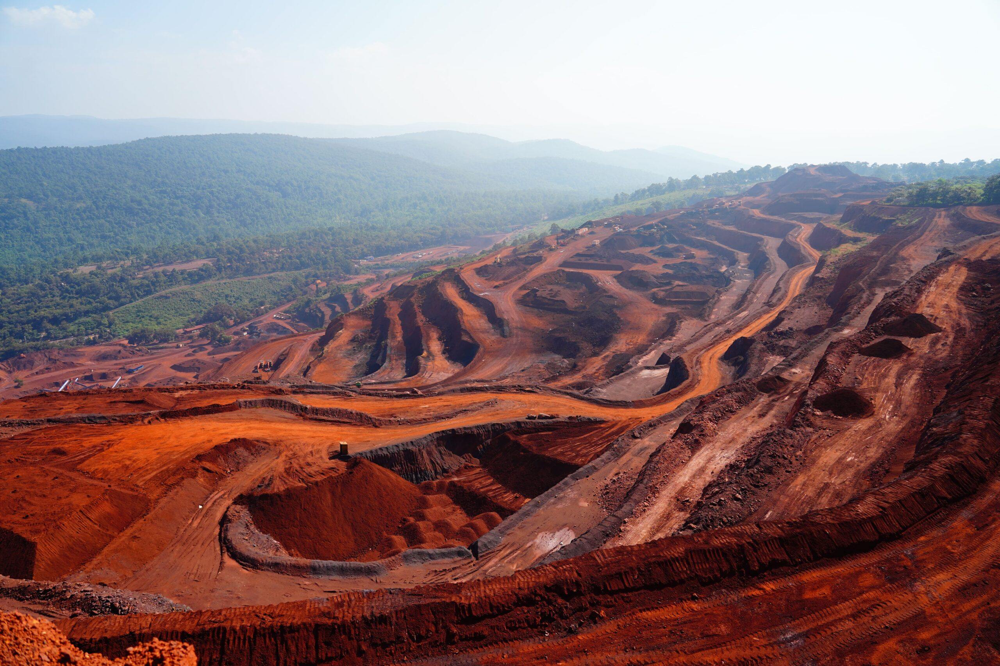
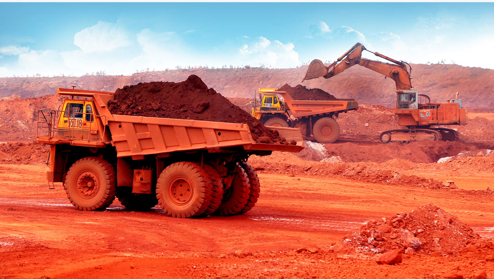
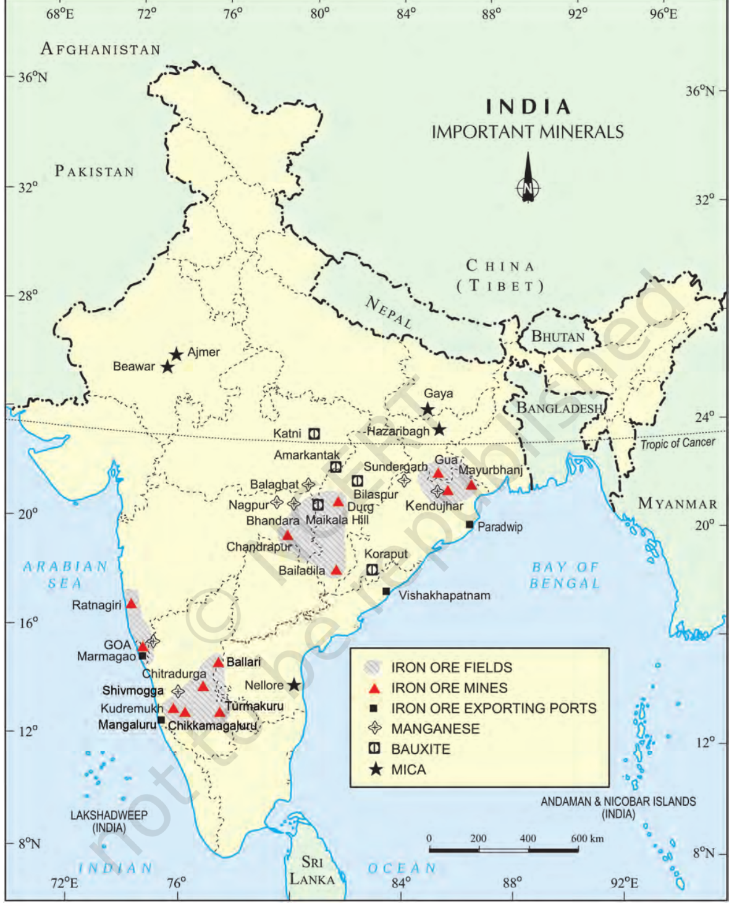
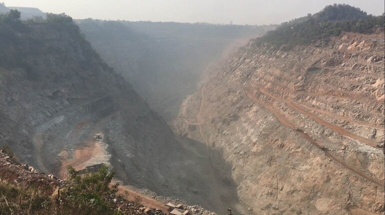
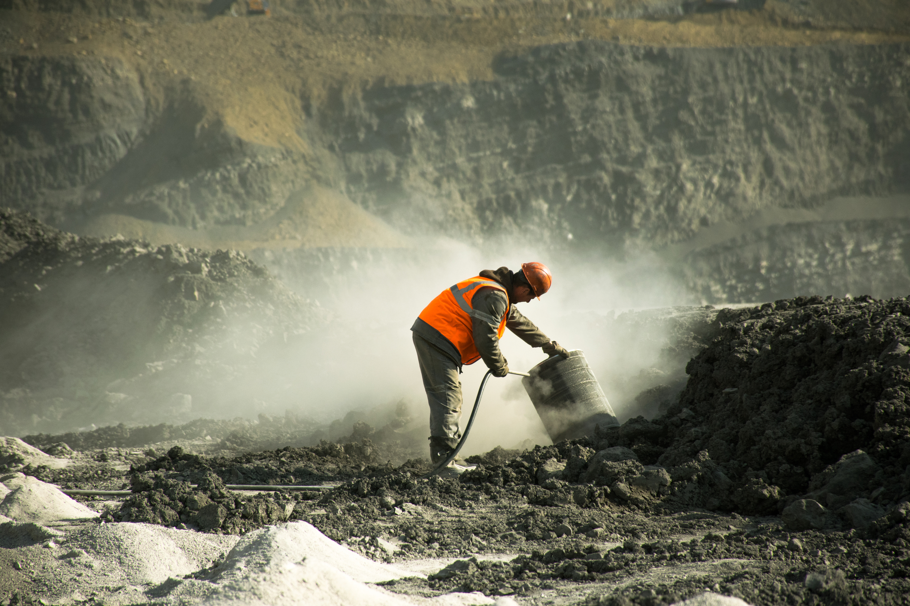

From ferrous minerals to the “killer industry” warning — an interactive visual journey through minerals, industry, mining hazards and responsible extraction.

A simple learning route from resources to responsibility: ferrous minerals → non-ferrous minerals → non-metallic and rock minerals → mining hazards.
Geology decides where mineral resources are found, and reserves become mines only when extraction is economically viable.
Iron ore, manganese, copper, bauxite, mica and limestone each support different industrial needs.
Unsafe mining can damage health, land, water and air. Safety regulations and environmental laws are essential.
Peninsular rocks contain most reserves of coal, metallic minerals, mica and many non-metallic minerals. Sedimentary rocks in Gujarat and Assam contain major petroleum deposits, while the alluvial plains of north India are almost devoid of economic minerals.

Ferrous minerals contain iron. They account for about three-fourths of the total value of metallic mineral production and support metallurgical industries such as iron and steel.
Up to about 70% iron, magnetic and valuable in the electrical industry.
The most important industrial iron ore, around 50–60% iron.
A basic mineral and the backbone of industrial development.
Mainly used in steel and ferro-manganese alloy; nearly 10 kg is required for one tonne of steel.
Four belts to remember: Odisha–Jharkhand, Durg–Bastar–Chandrapur, Ballari–Chitradurga–Chikkamagaluru–Tumakuru, and Maharashtra–Goa.

Badampahar, Gua and Noamundi.
Bailadila — known for very high-grade hematite.
Kudremukh mines and slurry pipeline to Mangaluru; Maharashtra–Goa ores exported through Marmagao port.
These minerals do not contain iron, yet they are vital for metallurgical, engineering, electrical and construction industries.

Forms from decomposition of rocks rich in aluminium silicates. Main deposits include Amarkantak, Maikal hills and the Bilaspur–Katni plateau region.
Splits into very thin sheets and is indispensable in electric and electronic industries because of insulation and high-voltage resistance.
A basic raw material for the cement industry and essential for smelting iron ore in the blast furnace.
Also used in bleaching powder, insecticides and paints in addition to steel and ferro-manganese alloys.
Comfort for society often depends on hard and risky work by miners. Health and environmental risks must be studied together.

Dust and noxious fumes can cause pulmonary diseases. Collapsing roofs, inundation and coal-mine fires are constant threats. Waste and slurry can degrade land, contaminate water and increase river pollution.
Nine ideas to lock in before the challenge.
Choose an answer. You will immediately see whether it is correct and why.